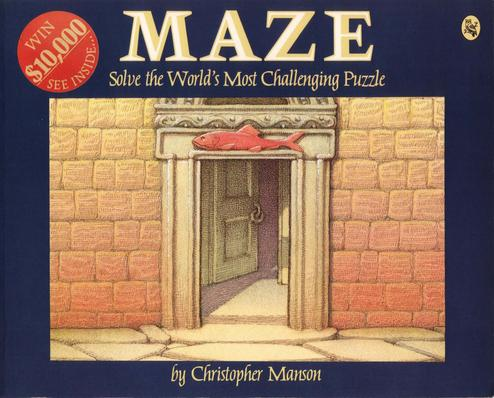

🔍
This website is a web version of Christopher Manson's 1985 book, Maze: Solve the World's Most Challenging Puzzle. The rooms are implemented as clickable HTML image maps, but you are free to move to any room by clicking the numbers at the bottom of each page.
I'm Al Sweigart. I write books that teach beginners to program and put them on my website for free. I began playing Blue Prince in May of 2025 and was absolutely astounded. Blue Prince is a masterpiece; the fulfilled vision of 1993's Myst. Looking into the history of Blue Prince led me to one of its key inspirations, the 1985 book Maze by Christopher Manson, who also contributed artwork to Blue Prince.
I'm now engaged in exploring Maze, and created this website to share this out-of-print book with others.
Special thanks to Jack for helping me create this site.
Text from Back Cover:
I invite you to enter my Maze. I say it is mine, because despite who else I might be, I am the architect as well as your guide. Your first goal is to find the shortest route through the Maze—a simple task, I assure you, if you know what to look for. I have planted clues throughout for your interpretation-or misinterpretation. Indeed, you will be fascinated by the Maze's ambiguity, stimulated by its mystery, stymied by its riddle. But fear not! I will be with you all the way. Fear not, that is, if you truly believe that my clues or I can be trusted.
Enter room 1. Which door should you take from here? Someone in the narrative uses the word "story," and the same word appears above the door to room 20. Is that the connection? Is there a connection? Give it a try and go to room 20, which is peculiar in its own way. Just inside the door to room 27 you see what looks like the bottom half of an archer's arrow—an arrow pointing the way perhaps? I will not tell. Perhaps it wouldn't help if I did. It is up to you to decide, as you move from room to room, hoping that fact is not illusion and that your best judgment has not led you astray.
Tempted? Test your wits against mine. I guarantee that my Maze will challenge you to think in ways you've never thought before. But beware...one wrong turn and you may never escape.
Additional information about Maze:
The critically acclaimed 2025 video game Blue Prince is heavily inspired by Maze and the 1993 video game, Myst:
Direct any questions or comments to al@inventwithpython.com
The source of this website (including an offline version) is on https://github.com/asweigart/mazewebsite
This unofficial website is not affiliated with Christopher Manson or Henry Holt and Company.
{kind=link}